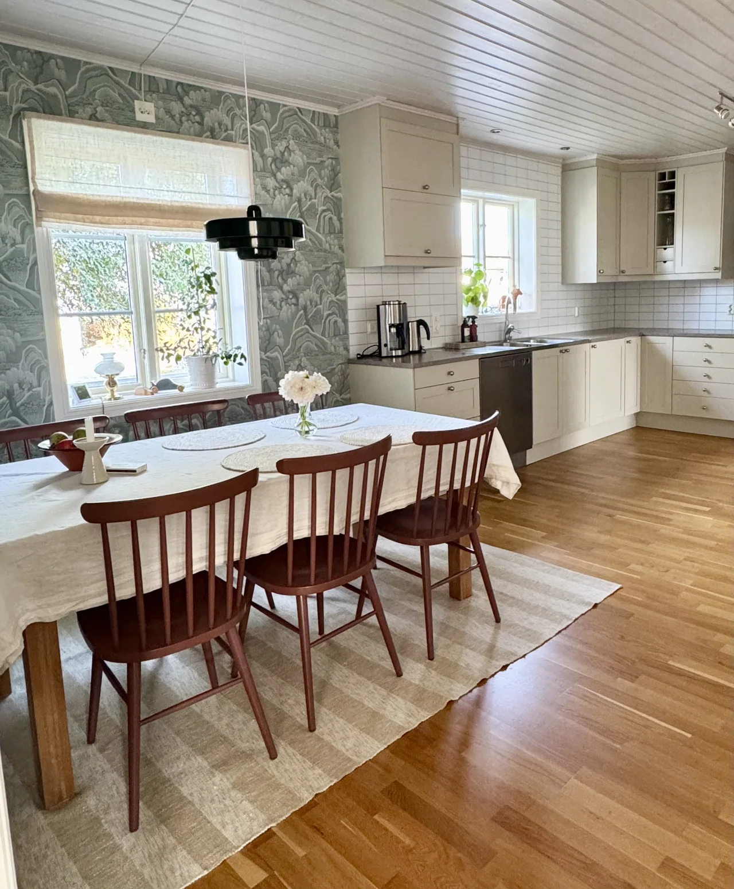

Villa Johannesson
Inredningsuppdrag · Fam. Johannesson · 2025

Bild från PURs projektarkiv
- Uppdrag
- Inredningsuppdrag
- Kund
- Fam. Johannesson
- År
- 2025
En genomtänkt helhet.
En varsam köksförnyelse där befintliga luckor målades om och kompletterades med en ljusare stenbänkskiva. Återbrukade möbler och stolar i en egen kulör knyter ihop rummet.
Prata om ditt projektProjekt och bilder från PURs originalpresentation. Bilderna kan öppnas i större format.